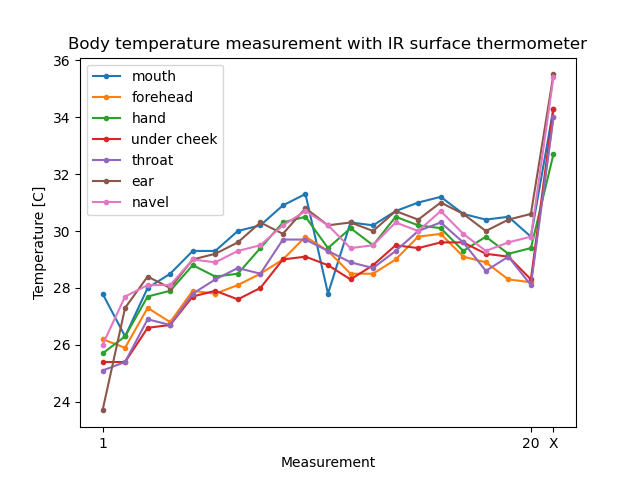

Published: 2020-05-17
Last updated: 2020-05-17 17:37
My grandpa wanted a thermometer to be able to easily find out if he had got a fever during the suites of Covid-19. However, he could not get a hold of a thermometer made for measuring body temperature, so he settled with a regular IR thermometer from Clas Ohlson (IR thermometer mini). It’s a quite neat little package with a button that, when pressed, takes a continuous measurement, and a small LCD display that shows the result.
The product would not start at first when he opened the package, so he sent it to me so that I could take a look at it. I found that the batteries were mounted backwards (!) and had been completely drained (probably of the same reason). But this was not a big problem since there was an extra set of batteries in the package. So I just switched them out. Et voilà!
After having “fixed” the thermometer, I decided to test it out to see how easy/accurate the measurement can be.
I made several measurements of several parts of my body (mouth, forehead, inside of hand, under cheek, throad, inside of head and navel) in quick succession. These measurements were retaken 20 times under a period of about 15 minutes. Then I let the thermometer rest for 5 minutes. Finally I made one last measurement.
The code snippet below contains the measurement data and creates a plot with it (the figure below).
# measurements.py
import matplotlib.pyplot as plt
import numpy as np
labels = ["mouth", "forehead", "hand", "under cheek", "throat", "ear", "navel"]
measurements = np.array([
[27.8, 26.3, 28.0, 28.5, 29.3, 29.3, 30.0, 30.2, 30.9, 31.3, 27.8, 30.3, 30.2, 30.7, 31.0, 31.2, 30.6, 30.4, 30.5, 29.8, 34.3],
[26.2, 25.9, 27.3, 26.8, 27.9, 27.8, 28.1, 28.5, 29.0, 29.8, 29.3, 28.5, 28.5, 29.0, 29.8, 29.9, 29.1, 28.9, 28.3, 28.2, 34.0],
[25.7, 26.3, 27.7, 27.9, 28.8, 28.4, 28.5, 29.4, 30.3, 30.5, 29.4, 30.1, 29.5, 30.5, 30.2, 30.1, 29.3, 29.8, 29.2, 29.4, 32.7],
[25.4, 25.4, 26.6, 26.7, 27.7, 27.9, 27.6, 28.0, 29.0, 29.1, 28.8, 28.3, 28.8, 29.5, 29.4, 29.6, 29.6, 29.2, 29.1, 28.3, 34.3],
[25.1, 25.4, 26.9, 26.7, 27.8, 28.3, 28.7, 28.5, 29.7, 29.7, 29.3, 28.9, 28.7, 29.3, 30.0, 30.3, 29.6, 28.6, 29.1, 28.1, 34.0],
[23.7, 27.3, 28.4, 28.0, 29.0, 29.2, 29.6, 30.3, 29.9, 30.8, 30.2, 30.3, 30.0, 30.7, 30.4, 31.0, 30.6, 30.0, 30.4, 30.6, 35.5],
[26.0, 27.7, 28.1, 28.1, 29.0, 28.9, 29.3, 29.5, 30.2, 30.7, 30.2, 29.4, 29.5, 30.3, 30.0, 30.7, 29.9, 29.3, 29.6, 29.8, 35.4]])
meas_count = measurements.shape[1]
fig = plt.figure()
for label, meas in zip(labels, measurements):
plt.plot(meas, '.-', label=label)
plt.legend()
plt.title("Body temperature measurement with IR surface thermometer")
plt.ylabel("Temperature [C]")
plt.xlabel("Measurement")
plt.xticks([0, meas_count-2, meas_count-1], [1, meas_count-1, "X"])
plt.show()
